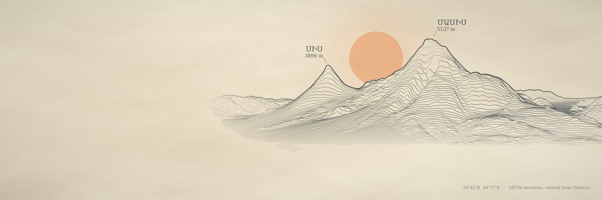
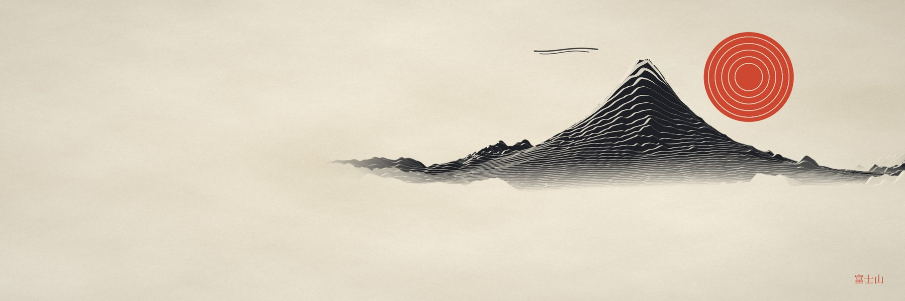
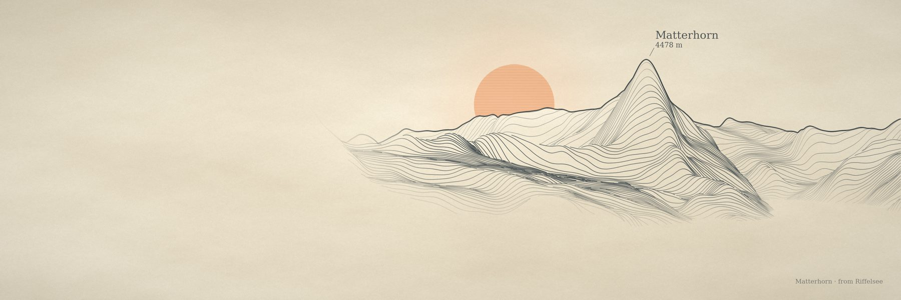
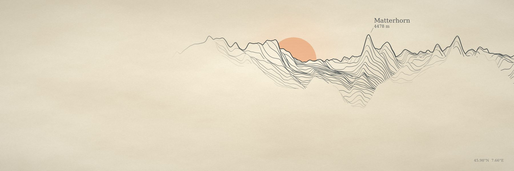
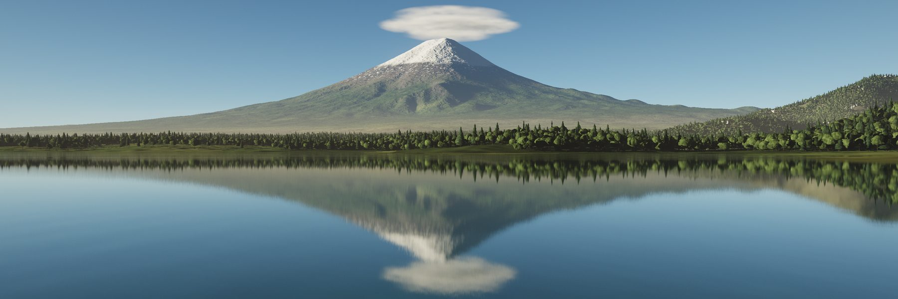
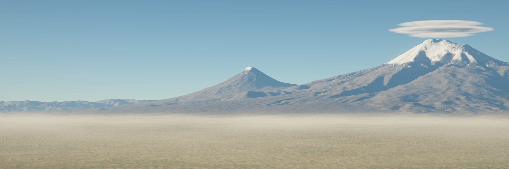
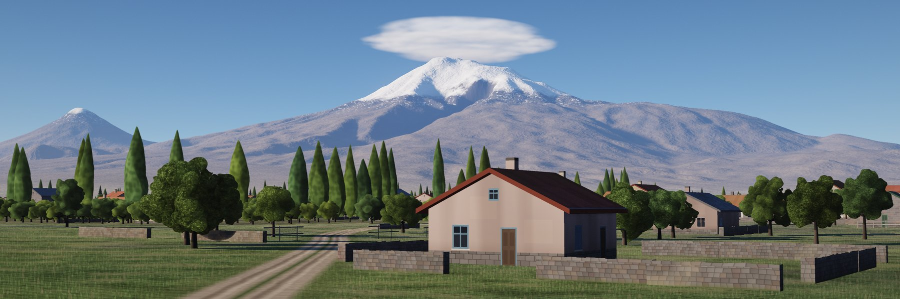
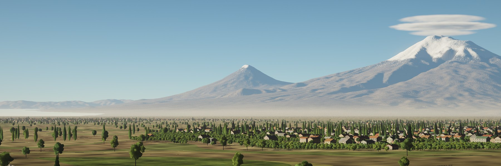
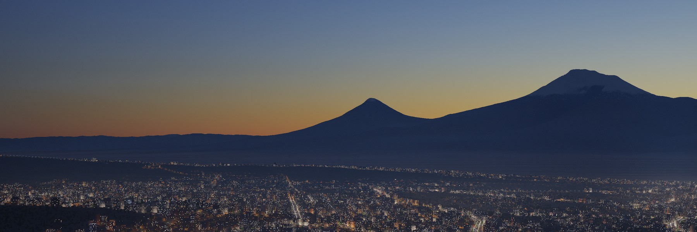
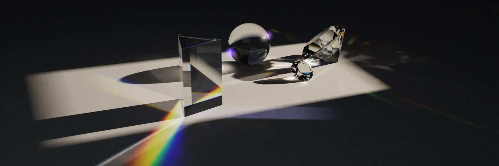

procedural-terrain-art
Any real mountain in six print styles, orbit videos, and a self-contained interactive studio page.
- headers and banners at the right sizes
- labels in the local script
- landform-aware framing
Every picture here was computed. Real elevation data, a perspective camera and a few thousand lines of Python produce the line engravings; a ray marcher with a physical sky produces the photographs; a path tracer written from scratch produces the glass. No generative image model touched any pixel. Two Claude skills package all of it, so you can point them at any mountain on Earth.
Try any mountain →type a peak, pick a style, save a header. Runs in your browser.
Masis and Sis, as seen from Yerevan. The same elevation grid and the same hidden-line buffer feed every style; only the drawing changes.

render.py --style survey · engraved ridgelines, sun in the saddleSave imageBefore drawing, the engine measures the ground around the summit: how steep the peak is for its footprint, what stands in front of it, how rough it is, whether the target sits below a plateau. Cones keep the original framing; horns, ranges and canyons get their own.

The first engine treated every mountain like Ararat, so the Matterhorn drowned in its own massif. Drag across the plate to compare.


Cone rulesLandform-awareThe same elevation, ray-marched through a physical atmosphere: Rayleigh and Mie scattering, soft terrain shadows, valley mist, a lenticular cloud with multiple scattering. Lakes reflect the terrain with Fresnel and ripple normals; trees, villages and city lights are instanced near the camera.

--water-level auto --waves 0.12 --trees 0.8 · camera 4 m above the waterSave image

--trees 0.8 --villages 0.7 --cam-height 0.003Save image
--trees 0.8 --villages 0.7Save
--sun-el -5 --city 0.8Savetimelapse.pyA Monte Carlo path tracer in plain numpy. Scenes are small JSON files: spheres, boxes, prisms, cut gems, hollow glasses with liquid in them. Light is sampled two ways and weighted, so glass and copper clean up many times faster than the first version.

scenes/prism_and_crystal.json · 60 samples / pixelSave imageA stroke renderer turns any image into a painting. Big brushes block in, small ones follow the contours of the picture where it still differs; watercolour is built from transparent washes with wet edges and granulation instead.
Each studio is one HTML file with a 512 × 512 elevation grid inside it. Orbit the mountain, move the light, change the ink, and save a 3000 × 1000 PNG. No server, no install.
Or skip the file: the Any mountain page runs the same engine on any peak you type, fetching the elevation as you go.
Two pipelines share one data source. Both skills ship the same dem.py.
Rows are projected near to far; a point is drawn only if it rises above everything drawn before it in its column. The buffer that remembers which row owns each pixel lets every style sample height, shade and snow per pixel.
Each pixel's ray walks the heightfield until it hits ground, then asks the sky how much light reaches that point and how much air sits between it and the camera. Everything is resumable in row bands, so a slow render survives a time-limited shell.
Both skills are plain folders of Python and Markdown. Install them in Claude and ask for a mountain.
Any real mountain in six print styles, orbit videos, and a self-contained interactive studio page.
Photographic terrain with lakes, forests, villages and night lights, sun timelapses, a JSON-driven path tracer, and a painterly finisher.
/plugin marketplace add dogum/procedural-art
/plugin install procedural-art@procedural-art.skill files above.